Alapanyagok
Triszkol
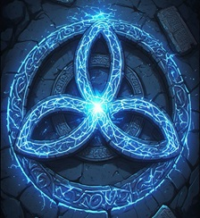
Szomatium
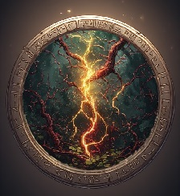
Frénium
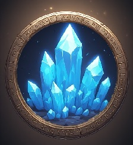
Neumonit
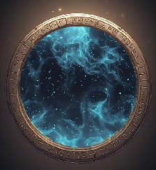
Virtusok
Lamentium
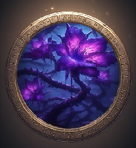
Némosznit
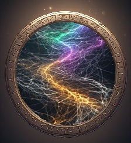
Irenit
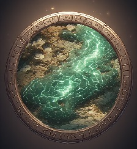
Szapinit
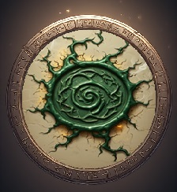
Ájdimin
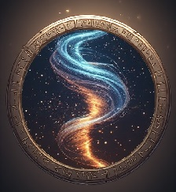
Meruzin
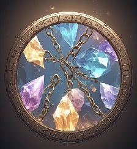
Veruzin

Meruzin
Ciklusok
Mularin
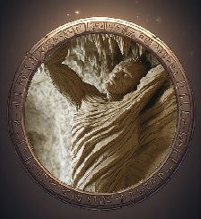
Uhton
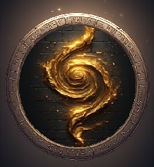
Meridal
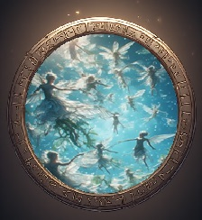
Heszperisz
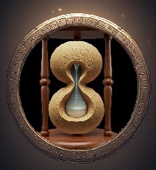
Farigion
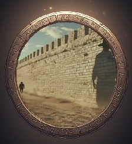
Esszenciák

Theráx
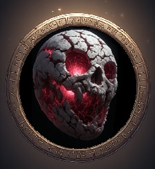
Anerox
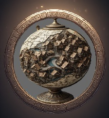
Eonix
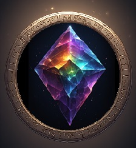
Disepelrix
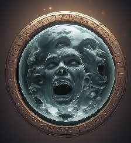
Sapaux
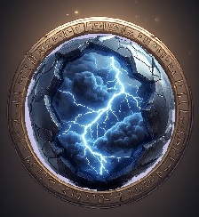
Szimtax
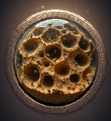
Kasztok
Katona
Harci Adatok: Jó
Képességek ereje: Elégséges
Fejlődési sokszínűség: Átlagos
Ira
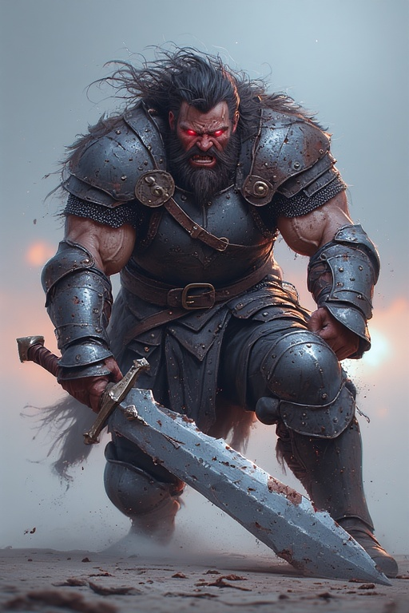
Attribútomok: Fizikum-Ügyesség-Állóképesség
Kezdő Hit: Antitheizmus - Dezertizmus
Kezdő Vidék: Eclepaan - Bastein
Kezdő Kapcsolat: Kahal:1
Kezdő Felszerelés
- Test: Fűzött Vért
- Fegyver: Pallos
- Fej: Sisak
- Kéz:Vaskesztyű
- Láb: Vassaru
Harci Adatok
- Támadás: 5-260
- Védekezés: 4-200
- HP: 12-145
Concordis
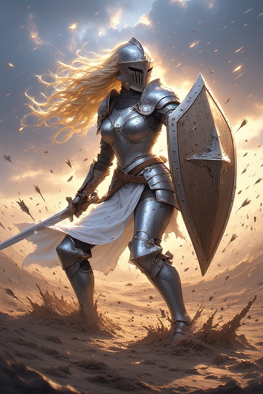
Attributúmok: Állóképesség - Fizikum - Felismerés
Kezdő Hit: Antitheizmus - Harmonizmus
Kezdő Vidék: Velbruun - Meiran
Kezdő Kapcsolat: Shatra:1
Kezdő Felszerelés
- Test: Merev Vért
- Fegyver: Szablya
- Kellék: Pajzs
- Fej: Sisak
- Derék: Csatakötény
Harci Adatok
- Támadás: 4-190
- Védekezés: 7-265
- HP: 14-160
Vanitas
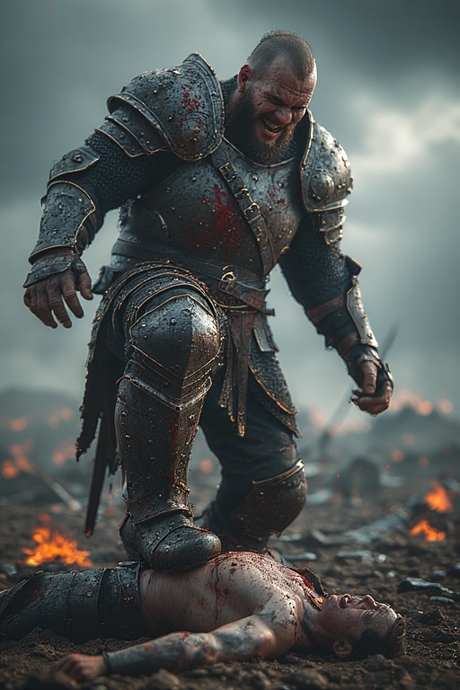
Attribútumok: Fizikum - Állóképesség - Gyorsasság
Kezdő Hit: Rebellizmus - Dezertizmus
Kezdő Vidék: Meiran - Eclepaan
Kezdő Kapcsolat: Kahal:1
Kezdő Felszerelés
- Test: Merev Vért
- Fegyver: Sulyok
- Fej: Főkötő
- Váll: Vállvas
- Derék:Vasszoknya
Harci Adatok
- Támadás: 5-250
- Védekezés: 3-212
- HP: 14-139
Caritas
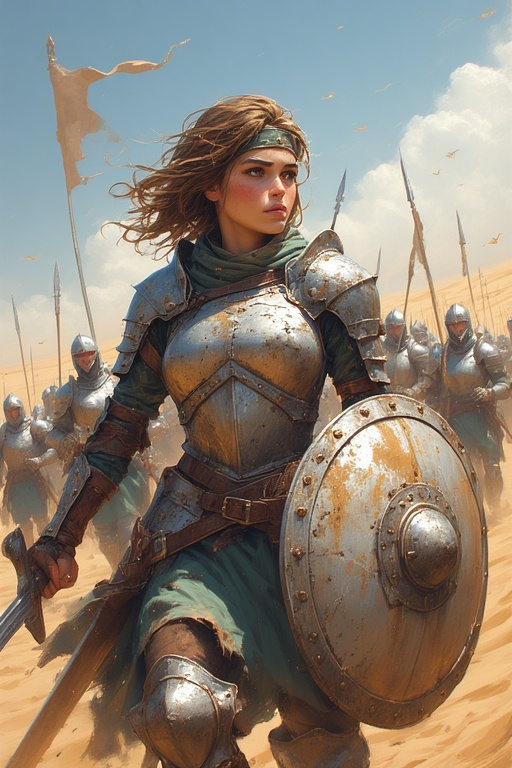
Attribútumok: Állóképesség - Tehetség - Erő
Kezdő Hit: Ortodoxia - Harmonizmus
Kezdő Vidék: Ventars - Saehrit
Kezdő Kapcsolat: Siphal:1
Kezdő Felszerelés
- Test: Fűzőtt Vért
- Fegyver: Lándzsa
- Kellék: Pajzs
- Váll: Vállvédő
- Láb: Sodronynadrág
Harci Adatok
- Támadás: 4-225
- Védekezés: 4-232
- HP: 15-154
Íjász
Harci Adatok: Átlagos
Képességek ereje: Átlagos
Fejlődési sokszínűség: Átlagos
Reyra
Attribútumok: Ügyesség - Intelligencia - Felismerés
Kezdő Hit: Ciklizmus - Rebellizmus
Kezdő Vidék: Laumalco - Meiran
Kezdő Kapcsolat: Siphal:1
Kezdő Felszerelés
- Test: Bélelt Vért
- Fegyver: Ártoló
- Nyak: Sál
- Váll: Vállvédő
- Láb:Csizma
Harci Adatok
- Támadás: 4-248
- Védekezés: 4-202
- HP: 10-150
Cardine
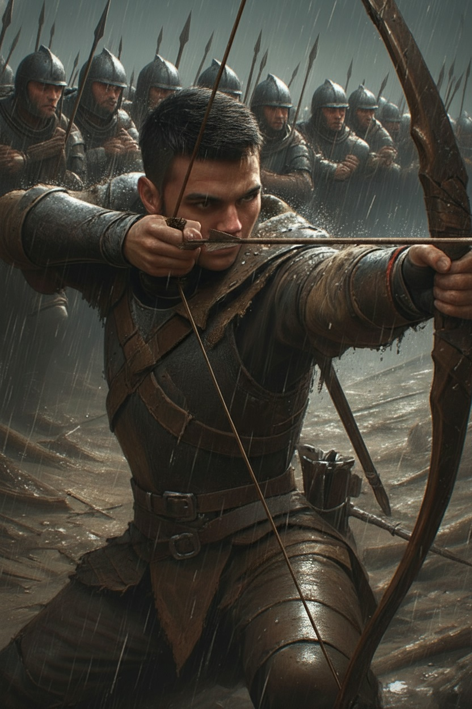
Attributúmok: Ügyesség - Tehetség - Inspiráció
Kezdő Hit: Ciklizmus - Harmonizmus
Kezdő Vidék: Velbruun - Meiran
Kezdő Kapcsolat: Shatra:1
Kezdő Felszerelés
- Test: Szegecselt Vért
- Fegyver: Ark
- Nyak: Nyakék
- Derék: Kardkötő
- Láb: Sodronynadrág
Harci Adatok
- Támadás: 4-252
- Védekezés: 5-210
- HP: 15-114
Gandive
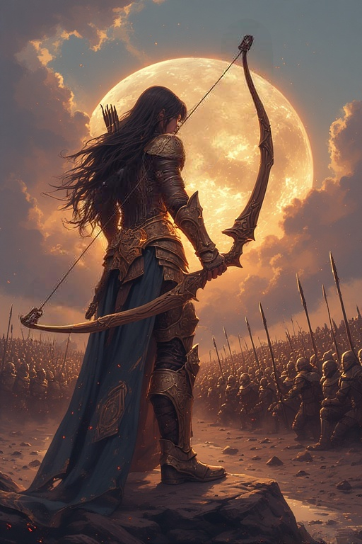
Attribútumok: Felismerés - Ügyesség - Fizikum
Kezdő Hit: Ortodoxia - Ciklizmus
Kezdő Vidék: Ventars - Meiran
Kezdő Kapcsolat: Ekkalri:1
Kezdő Felszerelés
- Test: Fűzött Vért
- Fegyver: Ark
- Váll: Vállvédő
- Kéz: Karkötő
- Derék: Öv
Harci Adatok
- Támadás: 4-208
- Védekezés: 6-238
- HP: 18-162
Mysterion
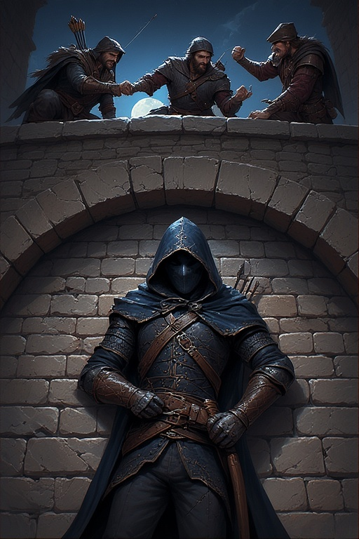
Attribútumok: Inspiráció - Intelligencia - Ügyesség
Kezdő Hit: Antitheizmus - Rebellizmus
Kezdő Vidék: Aydeliq - Laumalco
Kezdő Kapcsolat: Gestri:1
Kezdő Felszerelés
- Test: Szegecselt Vért
- Fegyver: Ártoló
- Fej: Maszk
- Váll: Köpeny
- Derék: Kardkötő
Harci Adatok
- Támadás: 4-232
- Védekezés: 3-220
- HP: 16-144
Szörnypásztor
Harci Adatok: elégséges
Képességek ereje: átlagos
Fejlődési sokszínűség: jó
Nemoris
Attribútumok: Ügyesség - Tehetség - Fizikum
Kezdő Hit: Harmonizmus - Antitheizmus
Kezdő Vidék: Saehrit - Velbruun
Kezdő Kapcsolat: Edubra:1
Kezdő Felszerelés
- Test: Díszruha
- Fegyver: Fokos
- Kellék: Relikvia
- Fej: Csuklya
- Váll: Vállkendő
Harci Adatok
- Támadás: 3-225
- Védekezés: 2-210
- HP: 20-170
Oreon
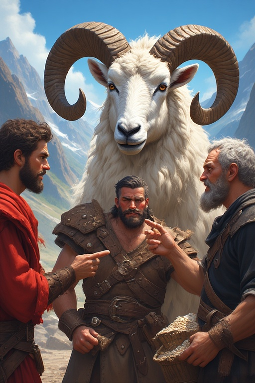
Attribútumok: Fizikum - Állóképesség - Inspiráció
Kezdő Hit: Dezertizmus - Antitheizmus
Kezdő Vidék: Eclepaan - Aydeliq
Kezdő Kapcsolat: Siphal:1
Kezdő Felszerelés
- Test: Szegecselt Vért
- Fegyver: Buzogány
- Kellék: Tarisznya
- Kéz: Kesztyű
- Láb: Csizma
Harci Adatok
- Támadás: 5-185
- Védekezés: 3-256
- HP: 17-152
Dyusa
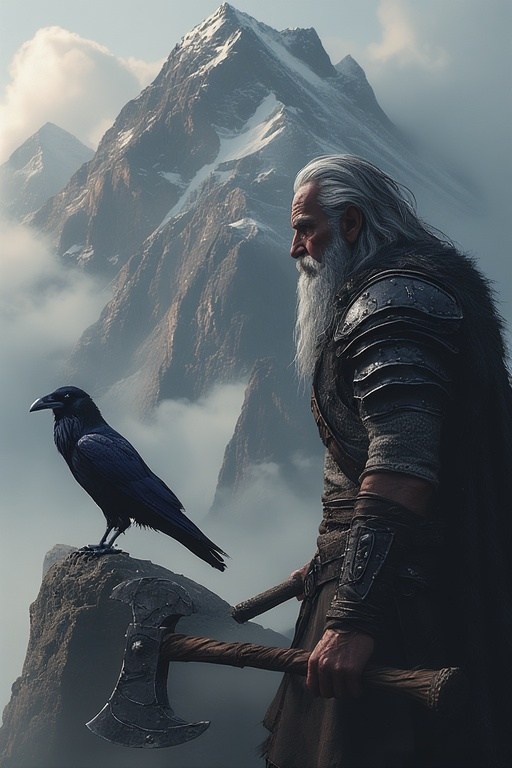
Attribútumok: Fizikum - Inspiráció - Intelligencia
Kezdő Hit: Antitheizmus - Dezertizmus
Kezdő Vidék: Eclepaan - Bastein
Kezdő Kapcsolat: Kahal:1
Kezdő Felszerelés
- Test: Bélelt Vért
- Fegyver: Csatabárd
- Fej: Főkötő
- Nyak: Amulett
- Derék: Derékpánt
Harci Adatok
- Támadás: 4-250
- Védekezés: 3-194
- HP: 16-143
Halalu
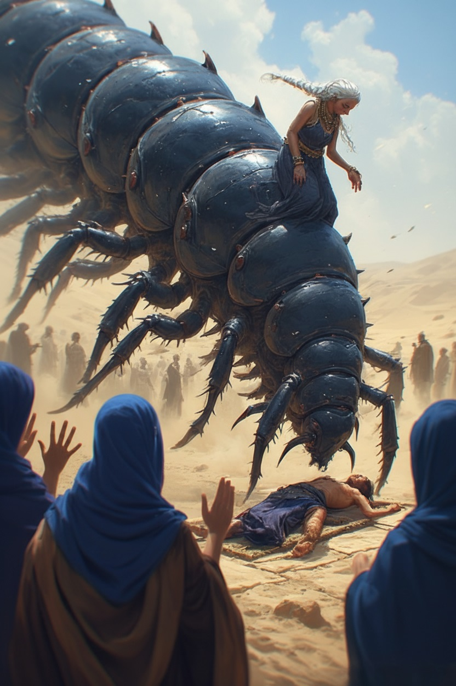
Attribútumok: Intelligencia - Fizikum - Felismerés
Kezdő Hit: Ciklizmus - Harmonizmus
Kezdő Vidék: Laumalco - Saehrit
Kezdő Kapcsolat: Gestri:1
Kezdő Felszerelés
- Test: Díszruha
- Fegyver: Ostor
- Kellék: Lámpás
- Nyak: Gallér
- Váll: Vállkendő
Harci Adatok
- Támadás: 3-202
- Védekezés: 3-234
- HP: 18-167
Paladin
Harci Adatok: Jó
Képességek ereje: Jó
Fejlődési sokszínűség: Gyenge
Quaestio
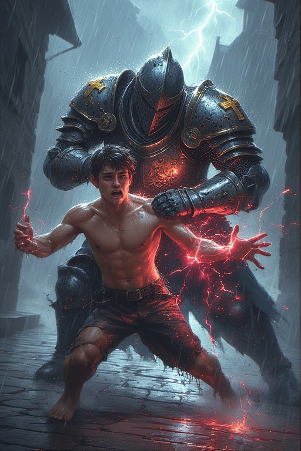
Attribútumok: Inspiráció - Ügyesség - Fizikum
Kezdő Hit: Ortodoxia
Kezdő Vidék: Ventars - Aydeliq
Kezdő Kapcsolat: Ekkalri:1
Kezdő Felszerelés
- Test: Merev Vért
- Fegyver: Gléfe
- Nyak: Nyakvért
- Váll: Vállvas
- Láb: Vassaru
Harci Adatok
- Támadás: 3-248
- Védekezés: 2-212
- HP: 15-145
Preceptor
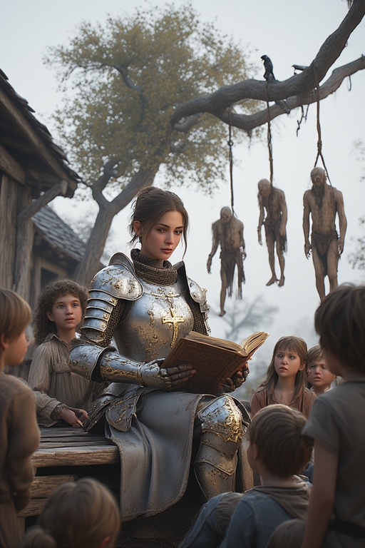
Attribútumok: Állóképesség - Inspiráció - Intelligencia
Kezdő Hit: Ortodoxia
Kezdő Vidék: Aydeliq - Velbruun
Kezdő Kapcsolat: Siphal:1
Kezdő Felszerelés
- Test: Merev Vért
- Fegyver: Kris
- Váll: Vállvas
- Derék: Csatakötény
- Láb: Vassaru
Harci Adatok
- Támadás: 4-202
- Védekezés: 4-254
- HP: 14-157
Probator
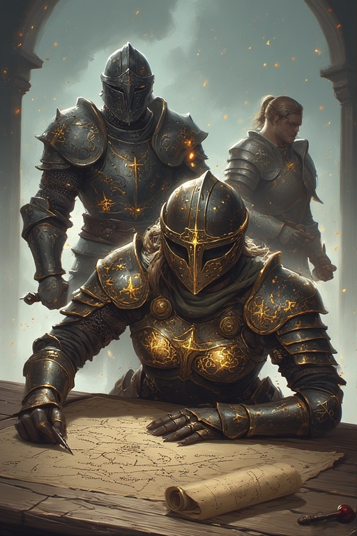
Attribútumok: Inspiráció - Tehetség - Gyorsasság
Kezdő Hit: Ortodoxia
Kezdő Vidék: Meiran - Bastein
Kezdő Kapcsolat: Ekkalri:1
Kezdő Felszerelés
- Test: Szegecselt Vért
- Fegyver: Viharpenge
- Kellék: Relikvia
- Váll: Válldísz
- Kéz: Vaskesztyű
Harci Adatok
- Támadás: 3-222
- Védekezés: 3-236
- HP: 15-151
Factotum
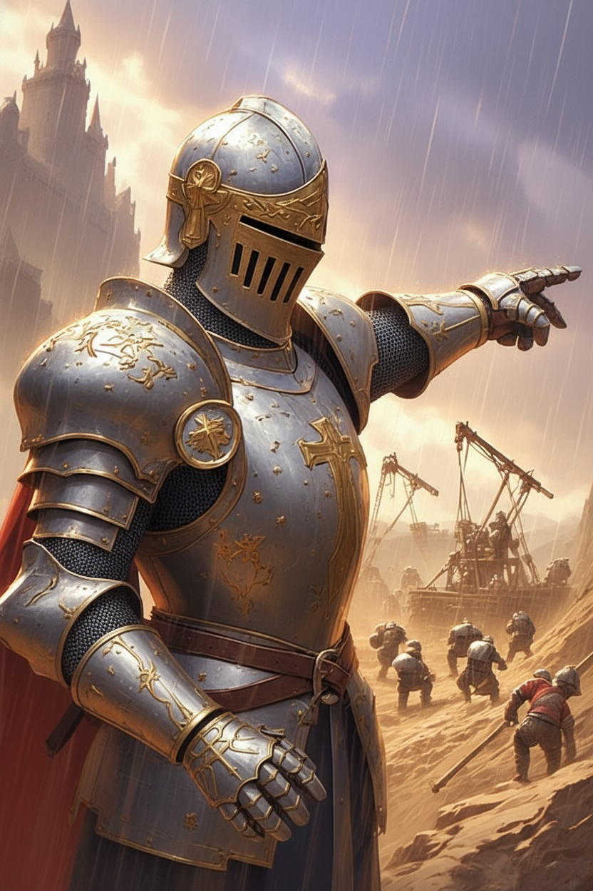
Attribútumok: Fizikum - Intelligencia - Inspiráció
Kezdő Hit: Ortodoxia
Kezdő Vidék: Ventars - Bastein
Kezdő Kapcsolat: Edubra:1
Kezdő Felszerelés
- Test: Fűzőtt Vért
- Fegyver: Meteor Kalapács
- Fej: Sisak
- Nyak: Nyakvért
- Váll: Válldísz
Harci Adatok
- Támadás: 4-230
- Védekezés: 2-220
- HP: 18-175
Mágus
Harci Adatok: Gyenge
Képességek ereje: Kiváló
Fejlődési Sokszínűség: Átlagos
Anfar
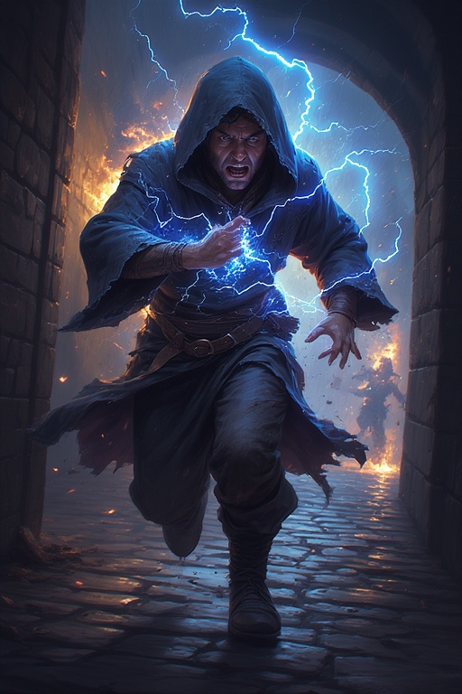
Attribútumok: Intelligencia - Tehetség - Gyorsasság
Kezdő Hit: Rebellizmus - Dezertizmus
Kezdő Vidék: Velbruun - Eclepaan
Kezdő Kapcsolat: Kahal:1
Kezdő Felszerelés
- Test: Díszruha
- Fegyver: Sudár
- Fej: Csuklya
- Kéz: Gyűrű
- Láb: Topánka
Harci Adatok
- Támadás: 3-260
- Védekezés: 2-180
- HP: 12-130
Fossa
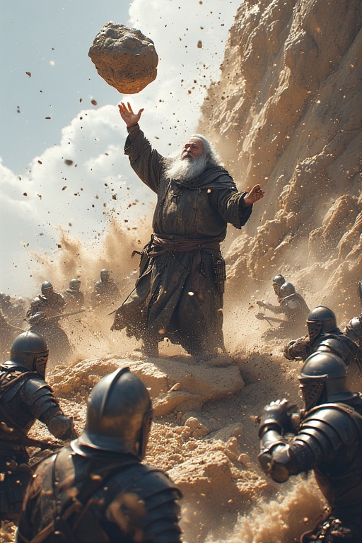
Attribútumok: Tehetség - Állóképesség - Intelligencia
Kezdő Hit: Ciklizmus - Antitheizmus
Kezdő Vidék: Laumalco - Aydeliq
Kezdő Kapcsolat: Gestri:1
Kezdő Felszerelés
- Test: Bélelt Vért
- Fegyver: Varázspálca
- Kellék: Hangszer
- Nyak: Amulett
- Láb: Szandál
Harci Adatok
- Támadás: 2-182
- Védekezés: 2-253
- HP: 14-145
Agne
Attribútumok: Intelligencia - Ügyesség - Állóképesség
Kezdő Hit: Dezertizmus - Ciklizmus
Kezdő Vidék: Eclepaan - Laumalco
Kezdő Kapcsolat: Edubra:1
Kezdő Felszerelés
- Test: Díszruha
- Fegyver: Gyilok
- Kellék: Lámpás
- Fej: Fejdísz
- Kéz: Bandázs
Harci Adatok
- Támadás: 4-275
- Védekezés: 2-175
- HP: 13-100
Kymarchos
Attribútumok: Gyorsasság - Intelligencia - Tehetség
Kezdő Hit: Harmonizmus - Rebellizmus
Kezdő Vidék: Saehrit - Meiran
Kezdő Kapcsolat: Edubra:1
Kezdő Felszerelés
- Test: Díszruha
- Fegyver: Varázspálca
- Kellék: Tarisznya
- Váll: Köpeny
- Láb: Topánka
Harci Adatok
- Támadás: 2-196
- Védekezés: 2-230
- HP: 15-172
Pap
Harci Adatok: Átlagos
Képességek ereje: Jó
Fejlődési sokszínűség: Elégséges
Theios
Attribútumok: Ügyesség - Állóképesség - Felismerés
Kezdő Hit: Ortodoxia
Kezdő Vidék: Ventars
Kezdő Kapcsolat: Ekkalri:1
Kezdő Felszerelés
- Test: Díszruha
- Fegyver: Sudár
- Fej: Fejdísz
- Nyak: Nyakék
- Derék: Derékpánt
Harci Adatok
- Támadás: 2-236
- Védekezés: 2-217
- HP: 11-141
Sakin
Attribútumok: Fizikum - Felismerés - Inspiráció
Kezdő Hit: Ortodoxia
Kezdő Vidék: Ventars - Bastein
Kezdő Kapcsolat: Ekkalri:1
Kezdő Felszerelés
- Test: Bélelt Vért
- Fegyver: Ártoló
- Nyak: Gallér
- Kéz: Gyűrű
- Láb: Szandál
Harci Adatok
- Támadás: 3-204
- Védekezeés: 3-237
- HP: 13-177
Rakshin
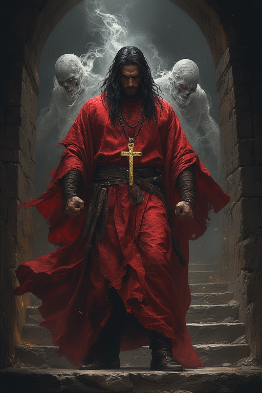
Attribútumok: Felismerés - Gyorsasság - Ügyesség
Kezdő Hit: Ortodoxia - Ciklizmus
Kezdő Vidék: Ventars - Laumalco
Kezdő Kapcsolat: Gestri:1
Kezdő Felszerelés
- Test: Díszruha
- Kellék: Tarisznya
- Nyak: Sál
- Kéz: Bandázs
- Derék: Öv
Harci Adatok
- Támadás: 3-252
- Védekezés: 2-204
- HP: 14-132
Hekan
Attribútumok: Felismerés - Inspiráció - Fizikum
Kezdő Hit: Ortodoxia - Harmonizmus
Kezdő Vidék: Ventars - Meiran
Kezdő Kapcsolat: Siphal:1
Kezdő Felszerelés
- Test: Bélelt Vért
- Fegyver: Emberfogó
- Fej: Fejdísz
- Kéz: Gyűrű
- Láb: Topánka
Harci Adatok
- Támadás: 2-219
- Védekezés: 3-232
- HP: 15-147
Átokfattyú
Harci Adatok: Kiváló
Képességek ereje: Gyenge
Fejlődési sokszínűség: Átlagos
Syazda
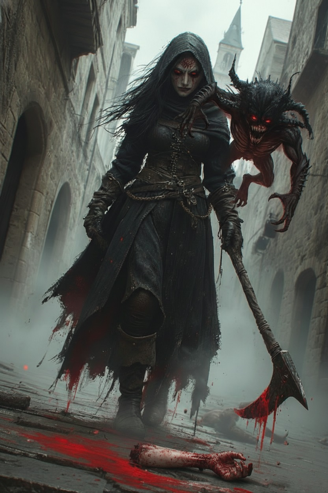
Attribútumok: Állóképesség - Fizikum - Felismerés
Kezdő Hit: Rebelizmus - Antitheizmus
Kezdő Vidék: Velbruun - Aydeliq
Kezdő Kapcsolat: Kahal:1
Kezdő Felszerelés
- Test: Fűzőtt Vért
- Fegyver: Csatabárd
- Fej: Maszk
- Váll: Köpeny
- Kéz: Karkötő
Harci Adatok
- Támadás: 4-215
- Védekezés: 4-253
- HP: 16-146
Compeditus
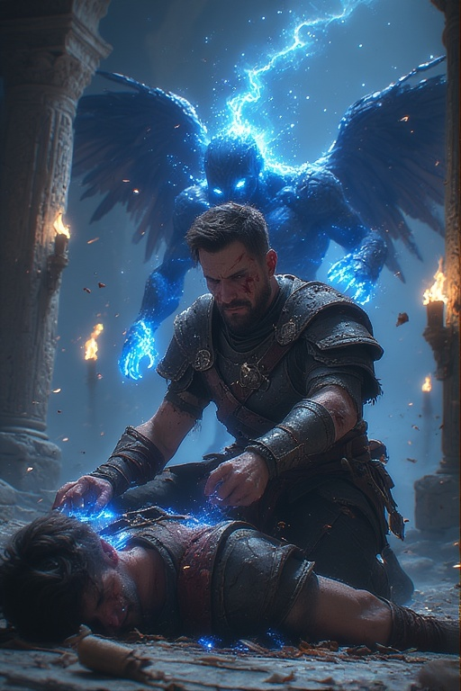
Attribútumok: Inspiráció - Állóképesség - Tehetség
Kezdő Hit: Ciklizmus - Rebelizmus
Kezdő Vidék: Laumalco - Eclepaan
Kezdő Kapcsolat: Ekkalri
Kezdő Felszerelés
- Test: Bélelt Vért
- Fegyver: Gyilok
- Kellék: Hangszer
- Derék: Derékpánt
- Láb: Szandál
Harci Adatok
- Támadás: 3-228
- Védekezés: 2-242
- HP: 18-140
Malison

Attribútumok: Felismerés - Gyorsasság - Állóképesség
Kezdő Hit: Harmonizmus - Dezertizmus
Kezdő Vidék: Meiran - Bastein
Kezdő Kapcsolat: Shatra:1
Kezdő Felszerelés
- Test: Merev Vért
- Fegyver: Pallos
- Kéz: Vaskesztyű
- Derék: Vasszoknya
- Nyak: Nyakvért
Harci Adatok
- Támadás: 3-240
- Védekezés: 3-222
- HP: 18-164
Bhayena
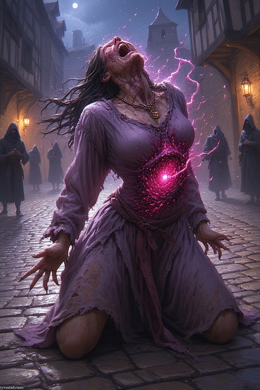
Attribútumok: Állóképesség - Felismerés - Fizikum
Kezdő Hit: Dezertizmus - Antitheizmus
Kezdő Vidék: Aydeliq - Bastein
Kezdő Kapcsolat: Gestri: 1
Kezdő Felszerelés
- Test: Bélelt Vért
- Fegyver: Lándzsa
- Nyak: Amulett
- Kéz: Kesztyű
- Láb: Csizma
Harci Adatok
- Támadás: 4-264
- Védekezés: 2-212
- HP: 16-122
Zsivány
Harci Adatok: Elégséges
Képességek Ereje: Elégséges
Fejlődési Sokszínűség: Kiváló
Nyx
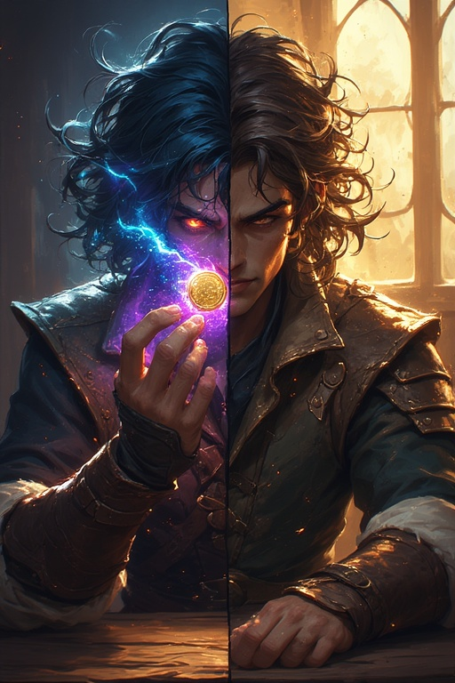
Esténként a Nyx egy kompetens, talélokony varázsló aki árasztja magából a bölcs tudósokra jellemző magabiztosságot. Nappal zsörtölődek, hibázgatnak mágiájukban és improvizációs zsenijük is csak nyomokban érhető tetten, mint aki valami gonosz átoktól szenvedne ezzel a dualitással. De a Nyx igazi ereje, hogy ezt mindenki be is veszi. Valójában ő az aki hasznot húz a dédelgetett álmok és az emberi képzelet erejéből, az aki a részleges tudás és agyszüleményként létező szakképzettség ütközőpontjában fogant.Tanulmányát az egyetemen félbehagyva, kiugrott diákként, a tudásában létező hézagokat a fantázia erejével és a hiszékenység alattomoságával tölti fel. Azt prezentálja csupán, amihez a kivülállók feltételezik hogy értenie kell. Mutatványai ettől lesznek hitelesek, a közönség azt látja, amire számít, logikai hézag csak abban jelentkezik, amit a néző biztosan át tud ugrani, a hibák pedig csak az illúzió megerősítésére szolgálnak. A Nyx eladhatná magát egy harcedzett katonának is, de minek ha negyed annyi munkával kétszer annyi hasznot érhet el. Az egyszerű nép hűsége, egy kalandor csapat ragaszkodása egy helyi kuruzslóhoz nagyon is valós értékkel bír, mégha szélhámosság útján is szerzik azt meg.
Harci értékei védekezés orientáltak, míg képességei a gyors improvizációra és egyszerű mágikus trükkökre fókuszálnak
Attribútumok: Gyorsasság - Ügyesség - Intelligencia
Kezdő Hit: Rebelizmus - Harmonizmus
Kezdő Vidék: Laumalco - Saehrit
Kezdő Kapcsolat: Kahal: 1
Kezdő Felszerelés
- Test: Szegecselt Vért
- Fegyver: Ostor
- Kéz: Bandázs
- Nyak: Gallér
- Derék: Öv
Harci Adatok
- Támadás: 3-210
- Védekezés: 3-230
- HP: 14-155
Nemesis
Amíg van pénzed, megvehetsz mindent amit szeretnél. Drága ruhákat, ékszereket, vagy valakinek a halálát is megrendelheted. De gyilkosság és gyilkosság közt is van különbség. A Nemesis mások kockáztatási-hajlamából húz hasznot. A játékhoz az alábbi szereplők szükségesek: Egy pénzért felfogadható mestergyilkos, akinek személyazonossága és foglalkozása is ismert, és diszkréciójáról híres. Nagy városokban dolgozva, csak páran, hogy a kereslet-kínálat arány ne boruljon fel. Az elit szféra aki kellő vagyonnal rendelkezik, és hajlandó rizikóztatni hogy szociális köreibe beenged akár egy őt célzó mestergyilkost, közülük kerülnek ki a kliensek. Egy uralkodási rendszer, ami inkább megtűri a játékot, semmint hogy kockáztassa hogy a mestergyilkok ellene forduljanak. Végül a közönség aki résztvesz a szociális rendezvényeken és boldogan mesélik el az ott, szemtanúk előtt elkövetett gyilkosság részleteit. A gyilkos feladata, hogy megbízását a lehető legnagyobb nyilvánosság előtt teljesítse, méghozzá oly módon ami kellő alapot ad a szószátyár közönségnek az ő legendájának építésére és a kliens számára visszaigazolására. Az elit szféra feladata, hogy rájöjjön, hiába ismeri a gyilkosok kilétét, azt sosem tudhatja hogy éppen kit fognak megcélozni az ő rendezvényein, és ha fellép ellenük kiírja magát a játékból. Az uralkodási rendszer feladata, hogy észben tartsa minden szereplő érdeke az ekvílibrium fenntartása. A közönség feladata, hogy pletykáival védje és nehezítse a gyilkos dolgát, nem feledve hogy túl kis hal ahhoz hogy célpont legyen. Ez a játék nem stabil, van amikor évtizedekig elő sem veszik. De a Nemesis, mint mestergyilkos, tudja, hogy egy játék folytatásához csak szereplők szükségesek.
Harci értékei extrém módon támadás orientáltak, képességei a pontos, halálos csapásokra, és figyelemfelkeltésre fókuszálnak.
Attribitúmok: Gyorsaság- Inspiráció - Ügyesség
Kezdő Hit: Ciklizmus - Harmonizmus
Kezdő Vidék: Laumalco - Meiran
Kezdő Kapcsolat: Shatra:1
Kezdő Felszerelés
- Test: Díszruha
- Fegyver: Kris
- Nyak. Sál
- Váll: Válldísz
- Kéz: Gyűrű
Harci Adatok
- Támadás: 3-256
- Védekezés: 2-198
- HP: 15-113
Vesper
Van, aki idejekorán felismeri azt a kincsesbányát, amit az emberek interakciói hordoznak, mikor élőben kalmárkodnak egy nehezen felismerhető értékkel, a beszéddel. Nincs nagyobb szakértője, legyen az démoni vagy mágikus ennek a tudománynak mint a Vesper. A vele való diskurzus már-már önsanyargató engedelmesség, mint amikor a katona vakon követi a hadvezérektől való parancsokat. Nincs mögötte kényszer, vagy bűbáj, csupán tökélyre fejleszett testbeszéd, páratlan fonetika és ezeknek a hibátlan olvasása, amikor más alkalmazza. A Vesper nem szónok, nem untatja hallgatóságát monológokkal, hagyja őket érvényesülni. Ereje nem abban rajlik, hogy középpontban van, hanem hogy a közzépont van ott ahol ő akarja. Egy apró módosítással megismételt kijelentés, csenben való figyelést követően egy határozott biccentés, a mondanivalóban elrejtett logikai bukfencek kiélesítése vagy elferdítése. A végeredmény hogy a másik azzal is egyetért amivel eredetileg nem akart, hogy hebehegyurgya állitások zsarolási alapokká válnak. A Vesperral való adott csevely a hallgatóság elégedettségével ér véget, de a vele való kapcsolat mindig sírással zárul.
Harci értékeik kiegyensúlyozottak, míg képességeik a gyors és hatékony kommunikációra, az ellenfelek hatástalanítására fókuszálnak.
Attribútumok: Ügyesség - Felismerés - Gyorsasság
Kezdő Hit: Antitheizmus - Rebelizmus
Kezdő Vidék: Velbruun - Aydeliq
Kezdő Kapcsolat: Shatra:1
Kezdő Felszerelés
- Test: Bélelt Vért
- Fegyver: Viharpenge
- Fej: Csuklya
- Nyak: Nyakék
- Derék: Kardkötő
Harci Adatok
- Támadás: 3-228
- Védekezés: 2-216
- HP: 16-143
Nimrod
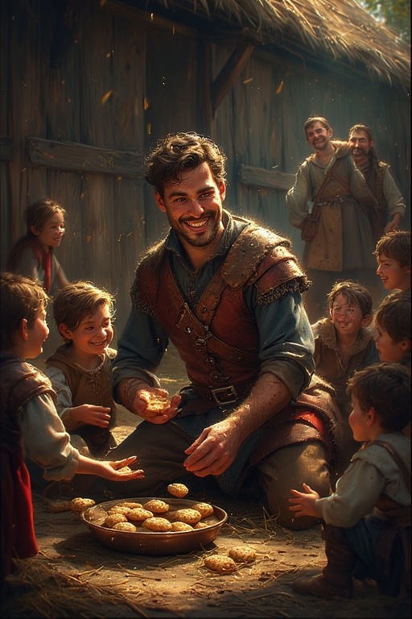
A falusiak mindig is szoros közösséget alkottak, de még egy segítőkész családban is vannak feladatok, amiket nem feltétlenül vállal magára valaki. Ebbe a résbe illeszkedik a Nimrod, aki az emberek kötelességtudatából és tartozásaiknak visszafizetéséből húz hasznot. Egy megjavított tető itt, egy újraélezett balta ott, apró szívességek halmazából egy saját várat lehet építeni. A Nimrod zsarnok a rendszer keretein belül, nem fegyverrel vagy hatalommal kényszerít és uralkodik, hanem körmönfontan az aránytalan kölcsönösség elvével. Neki nem kell sorban állnia, a kocsma tovább marad nyitva a kedvéért, nem kell a ceremóniákon részt vennie, vagy csak egyszerűen tovább alhat. Ügyelve rá, hogy a nyereség meghaladja a befeketett munkát összkomfortos életvitelt engedhet meg magának egy szegényebb vidéken is, ahol a helyiek szentséget látnak ármány helyett. Bár hiába is vonnák kétségre, a Nimrod katonai múltjából fakadóan megtévesztően jó fegyverforgató, amire nagyon hamar rájön bárki, aki kényelmét veszélyezteti.
Harci értékei támadás orientáltak, képességei széles körű fegyver arzenálra és szükségmegoldásokra fókuszálnak.
Attribútumok: Ügyesség - Gyorsasság - Tehetség
Kezdő Hit: Ortodoxia - Antitheizmus
Kezdő Vidék: Saehrit - Ventars
Kezdő Kapcsolat: Siphal:1
Kezdő Felszerelés
- Test: Fűzött Vért
- Fegyver: Szablya
- Kellék: Lámpás
- Derék: Vasszoknya
- Láb: Sodronynadrág
Harci Adatok
- Támadás: 3-241
- Védekezés: 2-206
- HP: 13-134
Fanatikus
Mi az előrébb való? Az identitás vagy az ideológia? A Fanatikus számára a válasz teljesen egyértelmű: nincs „én” hit nélkül. Számukra az áhítat nem az élet része, hanem maga az élet. Ami egyszerű meggyőződésként indul, apránként átitat minden döntést, minden cselekedetet, hogy a végén, mint egy szűrő, gátat szabjon bárminek, ami azzal kicsit is ellentétes. Vitákban szenvedélyesek, nézőpontjaikban elvakultak, a harcban kegyetlenek. A Fanatikus nem egy társadalmi réteg: éppúgy lehet paraszt, hivatásos katona, egyetemi professzor vagy vándorember, bárki, akiben a vallás iránti buzgóság átbillen az egészséges szinten. Nem tanok vagy előírások követőiről van szó, hiszen áthidalhatatlan szakadék húzódik álláspontjaik között arról, mi is a magasztos viselkedés, vagy mi az ildomos struktúrája egy fohásznak. Amit egyikük se merne megcáfolni, az csak a Triszkol — Test, Elme és Lélek harmonizációja — és annak a létezés feletti, kozmikus erőként betöltött funkciója. Bármi egyéb egy kiadós vita alapja, öltsön az formát baráti diskurzusban vagy tömegmészárlásban.
Harci Adatok: Elégséges
Képességek ereje: Kiváló
Fejlődési sokszínűség: Elégséges